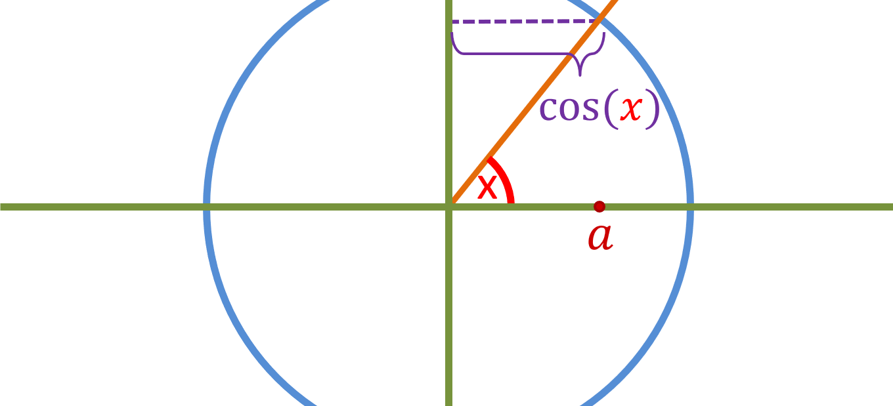

Here is a circle with raduis 1:

Lets say an orange line has been raised by angle x, and lets say that sin(x) is equal to z:
We will use a purple line to represent sin(x). Now instead of x, lets use -x:
The magnitude of the length of the purple line remains the same (in both cases the length is z), in other words [|sin(x)| = |sin(-x)|]. However, as you can see, sin(negative value) gave a negative output (-z), while sin(positive value) gave a postive output while the magnitude of both is the same. Therefore we can conclude that sin(negative value) multiplied by -1 will give sin(positive value) or vise versa, in other words [sin(x) = -sin(-x)]. Now lets say cos(x) is equal to a:
Now instead of x, lets use -x:
In both cases, the length of the purple line is a, in other words the value of cos(x) and cos(-x) is the same, which means that [cos(x) = cos(-x)].